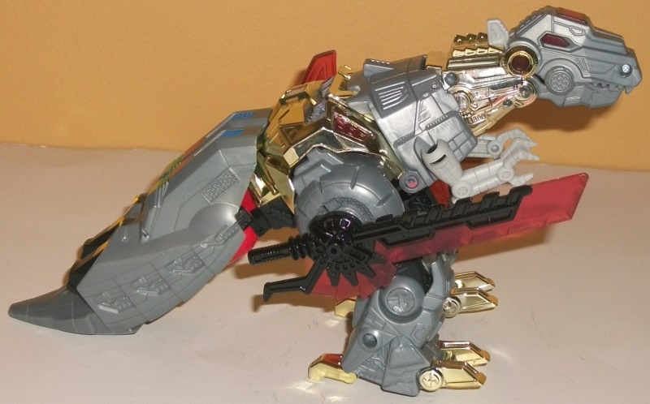
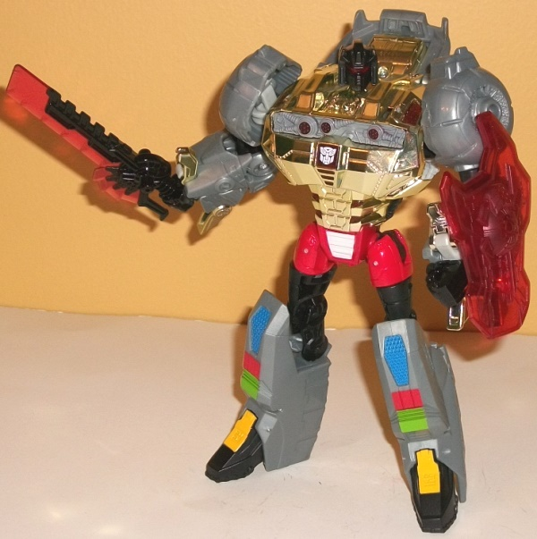
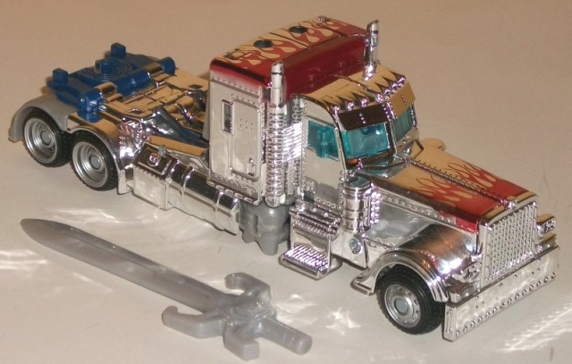
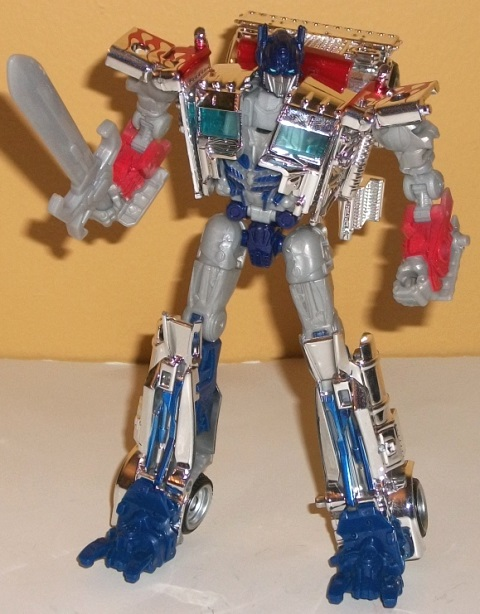

Grimlock
& Optimus Prime (Silver Knight) 2-pack {AoE} [Target Exclusive]
Grimlock
& Optimus Prime (Silver Knight) 2-pack {AoE} [Target Exclusive]
Price
: $30 (U.S.)
(NOTE: Because this set is composed of repaints,
this is not a full-blown review. This mainly covers any changes made to
the set and the color scheme, and merely compares it to the original versions
of these molds. For a review on the original Fall of Cybertron Grimlock--go
here
.
For a review on deluxe Dark of the Moon Optimus Prime--go
here
.)
Grimlock


Allegiance
: Autobot
Size
: Voyager
Difficulty of Transformation
: Medium
Color Scheme
: Light bluish gray,
chrome light goldish silver, black, transparent cherry red, and some pastel
bluish gray, orangish yellow, green, red, and blue
Individual Rating
: 7.9
At a first glance, this
Grimlock looks pretty similar to the original "Fall of Cybertron" release,
and as far as the general color layout he is-- but the difference is in
the details with this one, which overall tend to give Grimlock a more "G1"
vibe. For one, the gray plastics used are a bit more solid and less milky-looking,
and are a bluish gray as opposed to a straight gray this time. Although
they're still gray, this looks better overall than the gray on the original
version of this mold, in my opinion. Nearly all of the original's tan plastic
has been replaced with chrome that's mostly silver with just a titch of
gold in it (the official pictures you can find on the internet have it
fully gold, but the final product does not look like that). This is likely
not only to give Grimlock a bit more of a G1 callback what with the chrome
and all, but also to help him fit in with the whole "Silver Knight" theme
Target's exclusive AoE Optimus Prime toys have. The other major, obvious
change is that the paint apps on the robot legs and upper waist have also
been changed to more reflect Grimlock's G1 color layout. He has some a
rather nice sequence of blue, red, green, and orangish-yellow paint apps
as you go down his legs from the knees to the feet, and the front of the
waist and the hips is also painted a light red-- all of these apps really
catch the eye quite well and really help break up this section in both
modes. There's also more black on this version-- mostly in the robot mode--
on places like the head, feet, abdomen, and inner shoulder pieces. There's
some black paint on his sword, and on more of the sword than on the original
release. A few other, more minor changes, include the transparent plastic
being changed from a more flamey-red to a more cherry red-- which helps
visual contrast but doesn't say "Grimlock" as much as a fiery red. There's
also a regular white Autobot symbol on Grimlock's chest, as opposed to
the obscure "Lightning Strike Coalition" symbol on the FoC Grimlock toy,
and the Autobot symbol on Grimlock's dino forehead has been removed. Then
there's the downside of all these extra G1-y paint apps, and that's that
large sections of the toy that were painted or molded in gold, red, and/or
metallic gunmetal gray-- such as the sides and end of the tail, the lines
down the sides of the dino neck and at the dino jaw, the black on the shield
on the original, and the red on the knees of the dino mode-- are now bereft
of paint. Overall, though, I think it's a fair tradeoff, given how much
more visually interesting the other paint apps and chrome look on this
mold.
No mold changes have
been made to this version of Grimlock-- and yes, he still has the electronics
in his mouth to do the whole "fire breath" thing.
Optimus
Prime (Silver Knight)


Allegiance
: Autobot
Size
: Deluxe
Difficulty of Transformation
: Medium
Color Scheme
: Chrome silver, light
milky gray, and some black, silver, transparent light blue, chrome red,
chrome blue, moderately dark blue, light sky blue, and dark flat navy blue
Individual Rating
: 9.5
Okay, let's get the elephant
out of the room first-- this is clearly the wrong version of Movie Optimus,
what with this being a redeco of the Dark of the Moon deluxe. But at least
he looks closer to his movie version than his pack-in mate Grimlock! Leaving
aside the whole "movie accuracy" thing, which doesn't always seem to apply
to movie exclusives-- wowzers. This version of Silver Knight Optimus Prime
has the most chrome I've EVER seen on one toy. I think the only TF toys
that would beat it would be those rare Japanese Lucky Draws that are literally
coated in the stuff. Regardless, pretty much every piece of plastic on
this toy that can be chromed without a lot of friction being involved on
the part during transformation or said plastic being unpaintable nylon
is chrome silver on this version. Personally, on a deluxe-sized toy-- and
with the nifty "flame" paint apps on the truck front also being chrome--
I think this looks neat, particularly when mixed with just a bit of non-chrome.
Prime's feet and part of his inner legs are the usual Prime dark blue.
Interestingly, his head, abs, and waist are ALSO dark blue, but a slightly
DIFFERENT dark blue-- one that's a tad more darker and flatter. Not sure
why that was done, given that the difference is so slight and not really
consequential. There's a few paint apps on his lower arms that are light
red, to give him at least a bit of his "usual" Optimus colors. Additionally,
there's just a titch of silver paint on the wheel hubs and on Optimus'
faceplate, and the usual Autobot sky blue paint on his optics. Unfortunately,
there's also a lot of that blah light milky gray plastic on the toy, with
most of it visible in robot mode. I don't like this color, given how plain
and un-metallic it is... that said, given all the chrome, I think the light
gray plastic actually helps "ground" the color scheme and keep it from
looking TOO gaudy (though certainly some DO still think it too gaudy).
I wish there was a bit more dark blue and/or red in the robot mode so that
Optimus didn't have quite so much silver/gray, but overall he still looks
good regardless. As for worrying about chrome chipping-- mine's been through
some "play" and several transformations, and as of this writing (8/17),
there hasn't been a hint of chrome chipping.
No mold changes have
been made to the core Optimus toy, though instead of a DotM "Mechtech"
weapon this toy comes with-- of all things-- a light gray version of
G1
Headstrong's
sword. It fits in his fist holes, though, as do FoC Grimlock's
weapons if you want him to hold those, too.
It's hard not to recommend
the Target exclusive Silver Knight Prime & Grimlock 2-pack if you're
into things like store-exclusive redecos of main characters, particularly
if you don't have the original version of this Grimlock mold. Grimlock--
though similar in overall scheme to his FoC release-- improves upon it
a bit with a good amount of chrome to help him "fit in" with the set, uses
a better gray plastic, and has more interesting paint apps. Silver Knight
Optimus just looks NEAT with all that chrome, and it's hard for me not
to recommend something that catches the eye THAT well-- particularly since
you're getting this pack for about $10 less than if they were each sold
individually at retail.
Reviews by Beastbot
Back to Transformers:
Age of Extinction Index